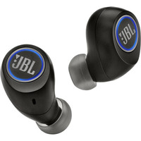
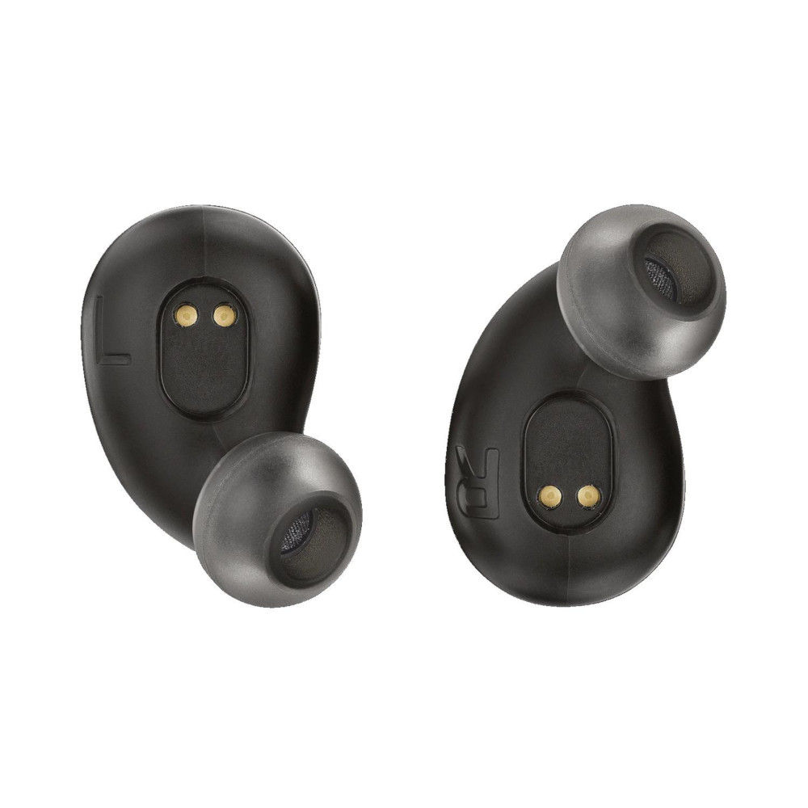
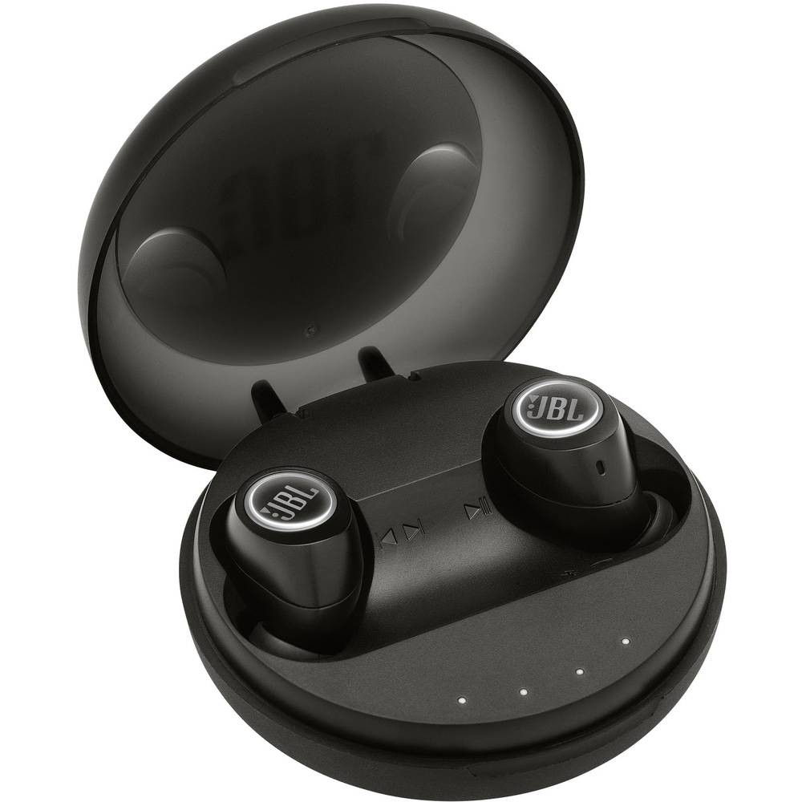

L'inform


JBL True Wireless FREE X Noir
Réf JBL : FREE-X-Noir
Ecouteurs Sans Fil Intra-Auriculaires - Bluetooth - Autonomie 4 heures
Réf JBL : FREE-X-Noir
Ecouteurs Sans Fil Intra-Auriculaires - Bluetooth - Autonomie 4 heures


JBL True Wireless FREE X Noir
JBL
Garantie légale de conformité : 2 ans

Véritablement sans fil
Découvrez la liberté d'un mode de vie sans fil, en écoutant de la musique, en gérant vos appels ou en faisant du sport.
24 heures d'écoute combinée
Profitez d'une journée compléte de son sans fil, avec 4 heures d'écoute ininterrompue et 20 heures de batterie de secours avec l'étui de recharche fourni.
JBL
Garantie légale de conformité : 2 ans
Véritablement sans fil
Découvrez la liberté d'un mode de vie sans fil, en écoutant de la musique, en gérant vos appels ou en faisant du sport.
24 heures d'écoute combinée
Profitez d'une journée compléte de son sans fil, avec 4 heures d'écoute ininterrompue et 20 heures de batterie de secours avec l'étui de recharche fourni.
Caractéristique Techniques
| Dimensions | 5.8 mm |
|---|---|
| Support | A2DP V1.3, AVRCP V1.6, HFP V1.6, HSP V1.2 |
| Réponse en fréquence | 10 Hz - 22 KHz |
| Bluetooth | 4.2 |
| Batterie |
85 mAh Autonomie 4 Heures Recharge < 2 heures |
| Boitier | 1500 mAh |